Hi, this is a website meant to showcase the progress and results of the project I undertook in DH110. The project I designed is a family connection app that takes the features of current family connection apps such as shared lists and a shared calendar, and implement features that allow for closer family connection. Specifically, this app will encourage family members to answer a daily question regarding emotions or thoughts about a specific topic in order to encourage a more open connection between family members.
At the beginning of the project's course, we were tasked to create a design centered around the idea of "connection". From this prompt, I chose to design an app that allows for family members to connect with eachother in increasingly busier times. One key point I wanted my design to focus on was to alleviate some of the pains surrounding mental health and wellness topics and conversations in a family space, where many members of traditional families feel as if many of these topics are hush-hush. With this idea, I felt it would be reasonable to combine a mental wellness feature with traditional organizational features such as a shared calendar.
The current existing issue is that many families around the world do not partake in learning and understanding each others mental health and overall wellness due to a variety of factors. Fonnect aims to connect families through shared organizational features and a mental wellness feature so that families can stay connected digitally.
To begin the design process I analyzed two popular family-connection apps on iOS, Maple and Cozi. Both apps were analyzed through use of heuristic evaluation and usability testing. Heuristic evaluation allowed for a quick and tested method to initially evaluate the design of the apps. Below are details of the tested apps, as well as their evaluation results.
| 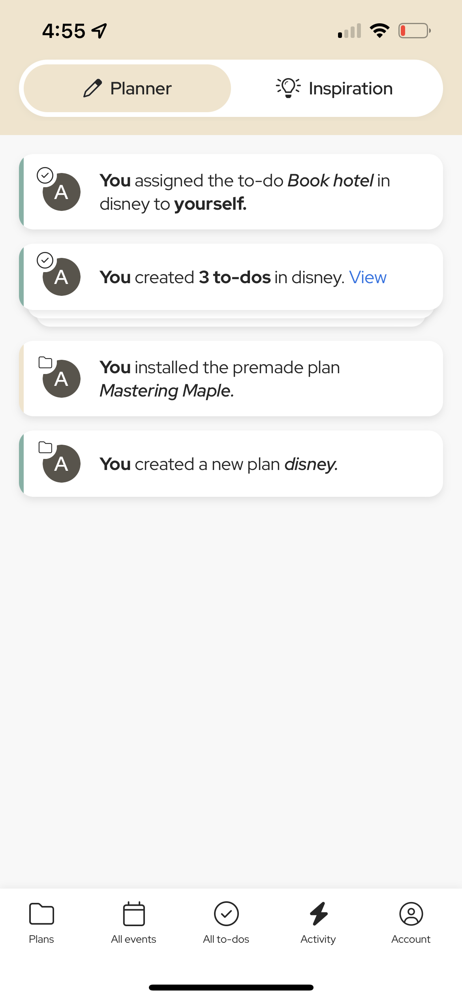 | 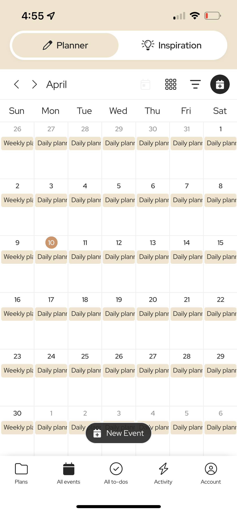 | |
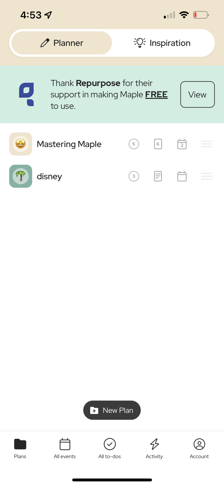 | |
Overall, Maple seemed to have no significant usability problems with only a few minor usability issues concerning ‘Flexibility and efficiency of use’ and ‘Help and documentation’.
| 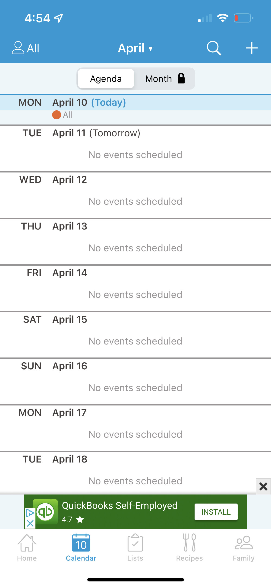 | 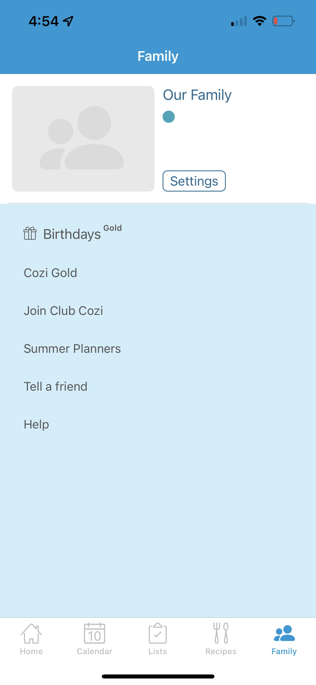 | 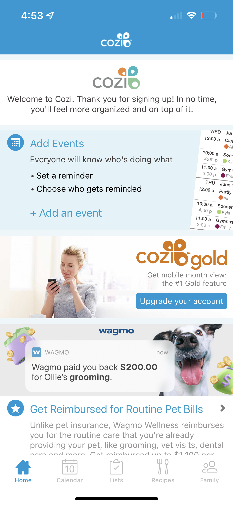 | 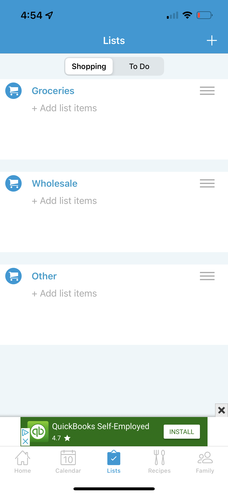 | 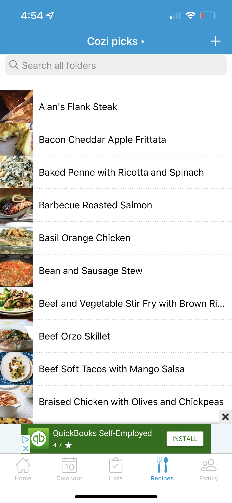 |
Heuristic Evaluation on Cozi found minor usability issues on ‘Recognition rather than recall’ and ‘Flexibility and efficiency of use’ as well as one major usability issue concerning ‘Aesthetic and minimalist design’.
Overall, performing heuristic evaluation on both apps provided me with a basic framework of do’s and don’ts as well as inspiration to create a design that is minimalistic and simple to use.
More info regarding my assignment on Heuristic Evaluation can be found here.
Due to the lack of major usability issues found on Maple, Usability testing was ran on Cozi. Usability testing is a form of human behavioral research in which an observer collects data from representative end users of a specific product all for the purpose of discovering any new design flaws that were not caught with Heuristic Evaluation.
The Usability Testing Survey can be found here.
The Usability Testing Video can be found here.
More info regarding my assignment on Usability Testing can be found here.
User Research allowed me to realize the achievable and honest use cases that the Fonnect app could support. The research method used was overt participatory observation in which a representative end user was asked varying questions regarding family connectivity and how they personally think about it.
From the interview, I was able to gather a few key insights that help in the task of creating more methods for easier and deeper family connection. One of the main key insights from the interview was that in families it often the case for parents to not feel as open to services such as counseling or therapy. This is an existing idea among many families that prevents family members looking for deeper connection from using these services. Another key insight found was that offering lists of how to make families connect is impersonal and thus hard to act on. The interviewee looked for advice to connect with family through a website of anonymous users relying their personal stories. I think the interview best shows how family counseling and therapy is not an option for many families due to the stigma surrounding it, which highlights a need for a less invasive form of servicing that allows for family connection.
The Interview Video Recording can be found here.
A more in depth look at my user research assignment can be found here.
With UX Storytelling, designers create personas of product end users in order to change their perspectives to what an actual user of a product may have envisioned. By creating personas, designers can have a shared and concrete view of the first users on their platform.
Below is one of the personas I created for Fonnect, along with the empathy and journey map.
| 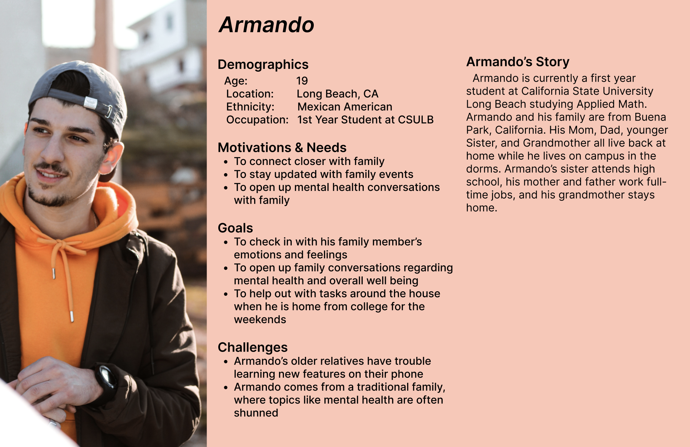 | 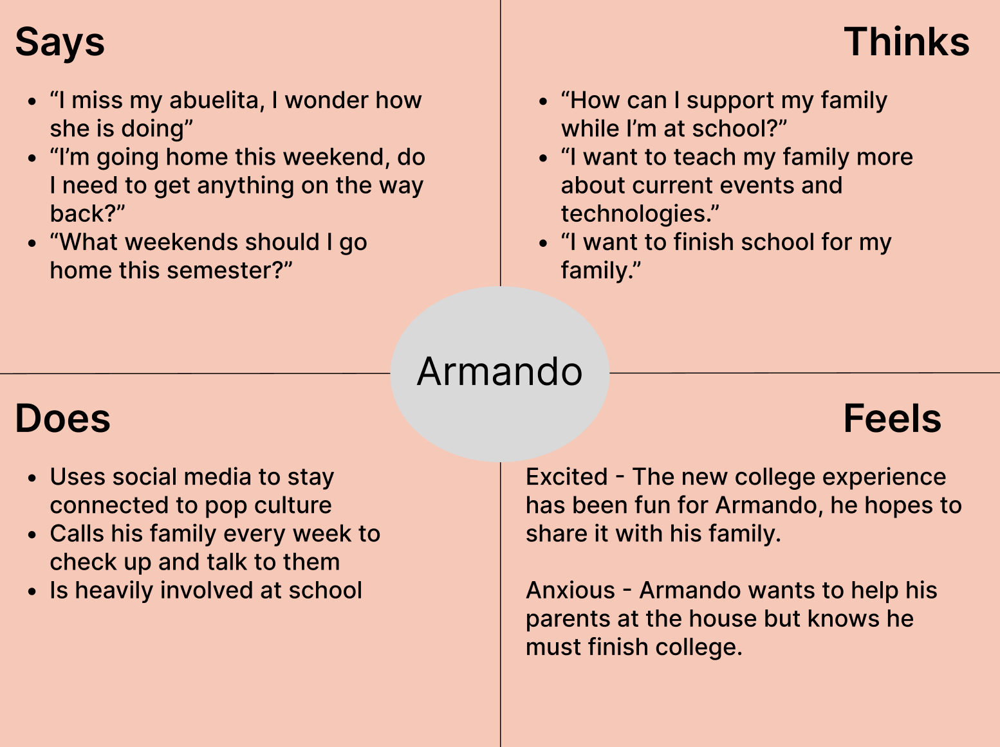 | 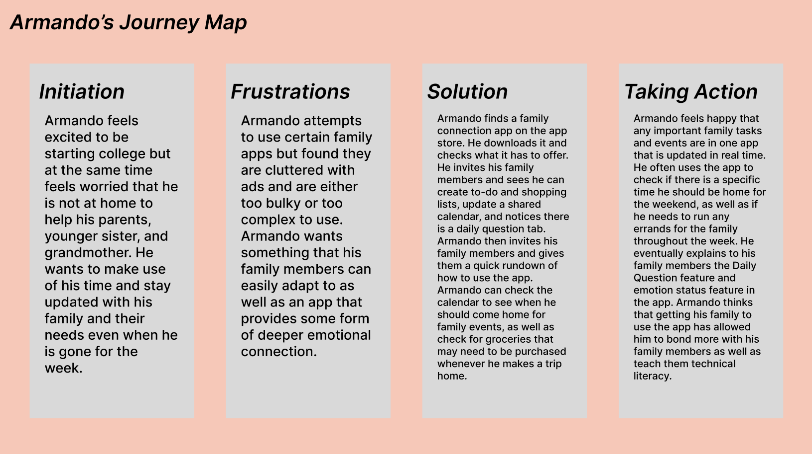 |
Overall, creating personas helped in providing an easier view of what representative end users seek for regarding family connection apps. This in turn gave a clearer idea of what specific features the app should support. Analyzing persona’s emotions and pain points proved extremely helpful.
A more in depth look at my ux storytelling assignment can be found here.
Wireframing is the process of giving yourself the ability to view the first possible UX design of a proposed project. By creating wireframes, designers can view how their proposed supported tasks flesh out into the design space. This method saves designers times, and gives them the ability to have other users test specific tasks and provide early feedback.
There were two supported tasks proposed for the first version of Fonnect, to show the functionality of the wellness tab and the events tab.
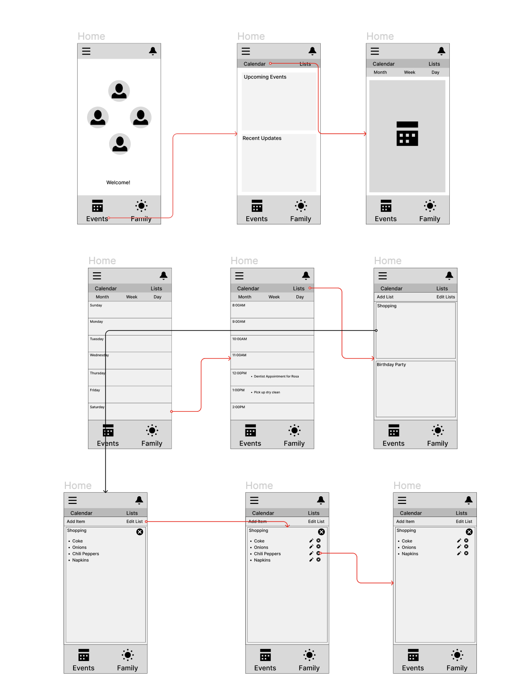Above we can see that a user checks the family tab, answers a daily question, and checks their mom’s profile to see their daily answers.
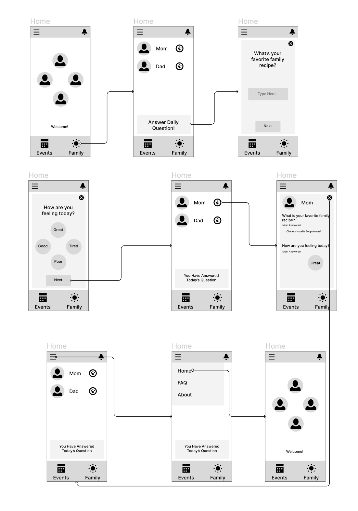Above we can see that the user clicks the events tab, sorts the calendar into week view, and then edits a shared grocery list.
Creating a wireframe to support two proposed tasks proved incredibly useful in starting the interface design of Fonnect. By providing myself with a list of steps in each supported task, it became clearer how certain pages around the app should flow with each other.
A more in depth look at my wireframing assignment can be found here.
Low-fidelity prototyping and interface design allows designers to test design variables such as color, layout, font, and shape.
| 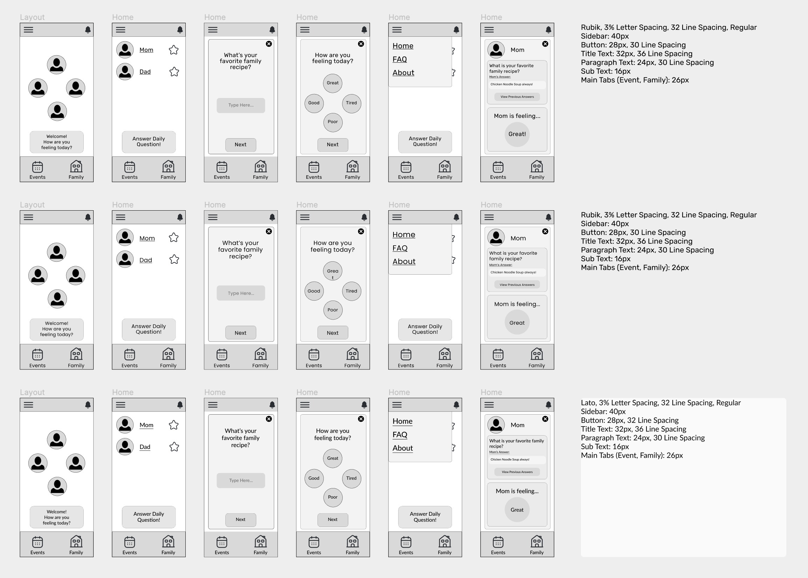 | 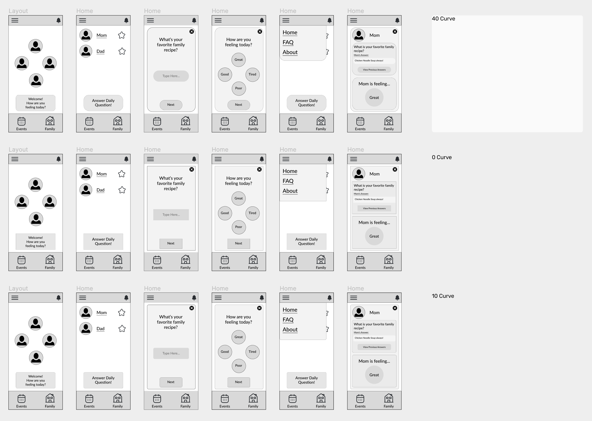 | 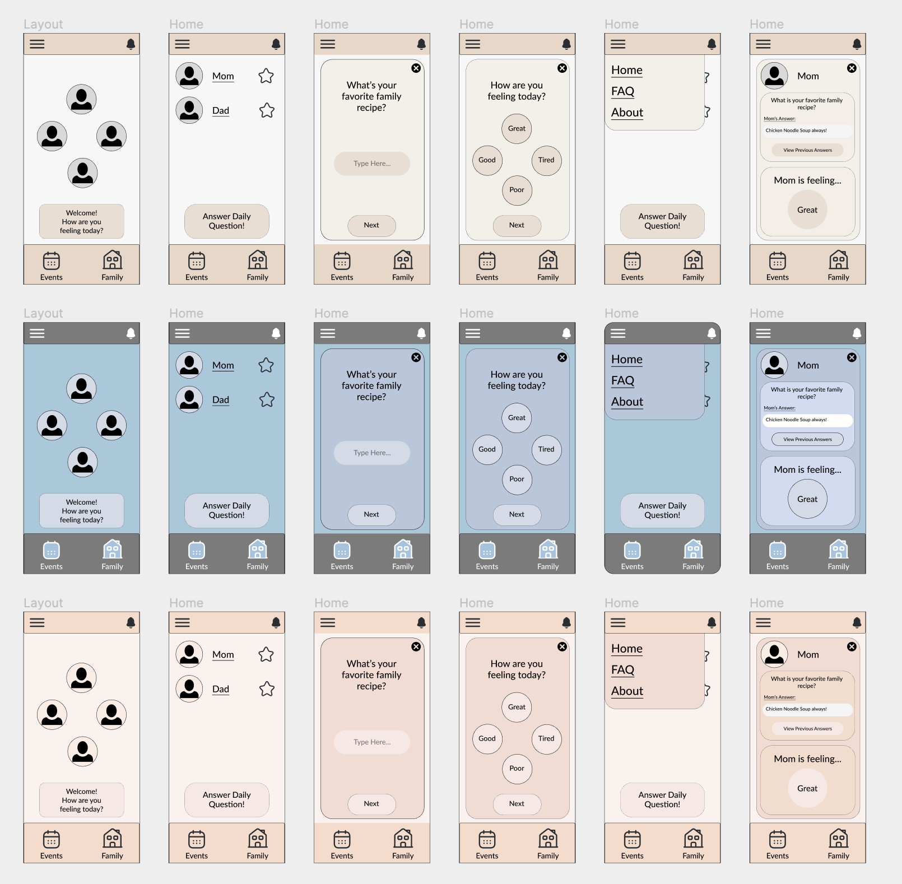 |
Above are the various typographic, shape, and color choices stacked against eachother, where the most minimalistic and aesthetic design was chosen. What resulted was a final interface design shown below.
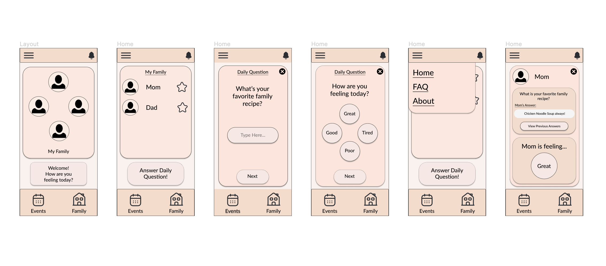
Though a final interface design, this image served as the main template I used moving forward when creating the high-fidelity prototype.
A more in depth look at my low-fidelity prototyping assignment can be found here.
After some time of sitting on the design choices during low-fidelity prototyping and user interface design, I was able to remove and substitute certain design choices I felt went against the minimal and simplistic flow of the app.

To use the available interactive prototype, please click here.
A more in depth look at my high-fidelity prototyping assignment can be found here.
A detailed pitch video showcasing the project can be found here.
This project served to be my first large scale design project in which I used various methods of evaluation, testing, and design steps to create and finalize a design. Throughout the project, I found that working incrementally on specific tasks week by week provided an efficient flow in creating a design. Whether it be heuristic evaluation or low-fidelity prototyping, I found that each assignment garned different learning outcomes that were useful in creating Fonnect's design. What is most surprising is that user research and usability testing emained to be the most time consuming phases in designing the app even when compared to the creation of the high-fidelity prototype. I felt many of my drawbacks during this project came from a lack of understanding the large impact that user researching and testing provides. It would've served my project if I had spent more time on preparing and giving depth to the materials for these testing methods, which heavily impacted my design choices and overall direction of the project. Still, I feel happy with my end result as it shows the large steps taken from a brief projection description to a fully fledged design.